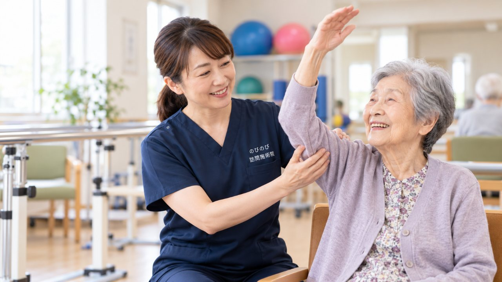

「デイサービスには行きたくない」と親が言う。無理に通わせるのも気が引けるけれど、家にこもって動かないのも心配。その板ばさみに、ひとつの答えとして「自宅で受けられるケア」があります。デイを嫌がる背景をそのまま受けとめながら、住み慣れた家で体を動かす機会をどう保つか、一緒に整理していきます。
先に結論を書きます。デイサービスを嫌がる親御さんには、自宅で受けられる訪問鍼灸マッサージという選択肢があります。集団が苦手でもマンツーマンで、外出の負担なく体を動かせます。医療保険で受けるため介護保険の限度額とは別枠。1回で総額3,950円、1割負担なら1回約395円が目安です。デイと併用も、デイのかわりに在宅でも受けられます。
「今日は行きたくない」と言われて、言葉に詰まる朝
送迎の車が来る時間が近づくと、決まって「体がだるい」「気が乗らない」と言う。前の晩は行くつもりだったのに、朝になると腰が重くなる。デイサービスを嫌がる親御さんを前にして、どう声をかけたものかと立ち尽くしてしまう。そんな相談を、私たちはよくいただきます。
まず知っておいていただきたいのは、行きたがらないのはわがままでも怠けでもない、ということです。口に出さないだけで、ご本人なりの理由がちゃんとあります。ある方は「知らない人ばかりの部屋にいると気疲れする」と言い、別の方は「レクリエーションが気恥ずかしい」とこぼす。お風呂の順番を待つ落ち着かなさが苦手な方もいます。理由をひとくくりにして「みんな最初はそう」と片づけてしまうと、かえってご本人は心を閉じてしまいます。
デイが悪いのではなく、合う人と合いにくい人がいる
誤解のないように書いておきたいのですが、デイサービスは本来とてもよい場所です。人と話すのが好きな方には、通う日そのものが張り合いになります。入浴や食事の世話を受けられ、日中の見守りがあるという安心は、離れて暮らすご家族にとっても代えがたいものでしょう。機能訓練を受ける機会にもなります。
ただ、同じ環境でも、にぎやかさが元気の素になる方と、それが負担になる方に分かれます。長く一人の時間を大切にしてきた方に集団のペースを合わせてもらうのは、思っている以上にこたえるものです。合いにくい方に無理を重ねると、外に出ること自体が嫌になってしまう。ここが難しいところです。以前どうだったかと比べるより、今のご本人が落ち着いていられる形はどこか、と考え直したほうが、結局はうまく運びます。
こもって動かなくなるのが心配、というご家族へ
「デイに行かないなら、一日中テレビの前に座ったきりになるのでは」。この心配は、的を射ています。体は使わない時間が続くと、関節がこわばり、筋力も落ちやすくなる。動くのがおっくうになれば、動かないことでさらに動きにくくなっていきます。
そのため、通うか通わないかという二択で考えるより、体を動かす機会を何かしらの形で保てているか、のほうに目を向けてみてください。デイを嫌がること自体が困りごとの入口なのではありません。困るのは、通わなくなったのをきっかけに、体を動かす時間までまるごと消えてしまうときです。そこさえ埋まれば、通う通わないは、その方に合わせて選んでかまわないものになります。
「通う」のかわりに「来てもらう」という道
体を動かす機会を保つことがねらいの一つなら、それは施術者が自宅にうかがう形でも果たせます。訪問鍼灸マッサージは、はり・きゅうに機能訓練を組み合わせて、住み慣れた部屋で受けるケアです。外出の支度も、車を待つ時間もいりません。いつものベッドやお布団の上で、見慣れた庭を眺めながら受けられます。
慣れない場所や大人数が苦手な方にとって、この「いつもの場所であること」の安心は、実際に受けてみると想像以上に大きいものです。玄関を出なくてよいぶん、始めるときの気持ちの重さがずいぶん軽くなります。ご本人が施術そのものに気乗りしない場合は、無理には進めません。始め方の工夫については親が訪問施術を嫌がる・遠慮するときでも詳しく触れています。
一対一だから、その日の気分にそっと合わせられる
施術は一対一です。周りに気をつかうことも、順番を待つこともありません。話し好きな方とはおしゃべりを楽しみながら、口数の少ない方には無理に話しかけず静かに手を動かす。その日のご本人の様子に合わせられるのが、自宅で受けるいちばんの持ち味だと思っています。集団の中では気疲れしていた方が、自分のリズムのまま過ごせるようになります。
内容は、外出が減って固まりがちな股関節や膝をゆっくり動かして可動域を保つこと、肩や腰のこりをほぐすこと、冷えた足を温めてめぐりを助けること、そのあたりが中心になります。毎回まったく同じではなく、「今日は腰が重い」という日は腰まわりに、「膝がこわばる」という日は膝に、と重点を変えます。保険の対象になるのは神経痛・リウマチ・頸肩腕症候群・五十肩・腰痛症・頸椎捻挫後遺症といった症状で、こうした痛みやしびれを抱える方の毎日を、少しでも楽にする手助けができればと考えています。ただし、これで病気そのものが治るわけではありませんし、感じ方には個人差があります。人と関わる機会のほうは、ご家族との時間や地域の集まりと少しずつ組み合わせながら、その方に合う形を一緒に探していけばよいのです。すべてをデイで満たそうとしなくていい、と思えると、気持ちが少し軽くなるかもしれません。
デイをやめなくてもいい。併用も、切り替えも選べます
訪問鍼灸マッサージは医療保険（療養費）で受けるもので、介護保険の限度額とは別の枠です。ですから、デイを続けたまま体のケアだけ自宅で足すこともできますし、デイのかわりに在宅で受けることもできます。受けるには医師の同意書が必要ですが、要介護認定は要りません。認定を待っている段階の方でも始められます。ひとり暮らしの親御さんについては一人暮らしでも受けられる？もあわせてご覧ください。
「デイは週1回だけにして、あとは訪問で」「まずは訪問で様子を見て、慣れたら少人数のデイも」。こうした組み合わせや段階的な進め方も選べます。担当のケアマネジャーがいれば、相談しながら組み立てられます。一点だけ補足しておくと、デイなどで医療保険のリハビリを同じ部位に受けている場合、その部位への鍼灸を同じ月に重ねて算定することはできません。ここは事前に確認しておくと安心です。
費用のこと、そしてご家族だけの相談から
費用は1回で総額3,950円です。自己負担が1割の方ならおよそ395円が目安になります。たとえば週2回のペースで続けた場合、1割の方で月におよそ3,160円ほど。訪問にかかる費用もこの料金に含まれており、別に出張費をいただくことはありません。機能訓練を組み合わせても追加料金はかからず、明細は月ごとにお渡しします。
ご本人がまだ迷っている段階でも、まずはご家族だけでご相談いただけます。ご希望があれば無料の体験を受けていただくこともできますので、様子を見てから決めていただいてかまいません。行きたくないと言うからもう手立てがない、と思い込む前に、通う以外の道もあることを思い出していただけたらと思います。デイが合う方もいれば、自宅のほうが落ち着く方もいる。何が引っかかっているのか、どんな進め方なら無理がないか、ご本人の性格や暮らしぶりに合わせて、一緒に考えていきます。
よくある質問
デイに行かないと、体力が落ちてしまいませんか？
動く機会を自宅で保てれば、こわばりや筋力の低下を防ぐ助けになります。訪問鍼灸マッサージなら、通わずに体を動かす時間をつくれます。
集団や大人数が苦手でも受けられますか？
はい。訪問はマンツーマンで、住み慣れた自宅で受けられます。順番待ちも、周りへの気づかいもいりません。話したくない日は、静かに施術を進めることもできます。
デイと訪問鍼灸マッサージは併用できますか？
できます。医療保険で受けるため介護保険の限度額とは別枠で、デイを続けながらの追加も、デイのかわりに在宅で受けることも可能です。ケアマネジャーがいれば相談しながら決められます。
受けるのに要介護認定は必要ですか？
要介護認定は不要です。医師の同意書があれば受けられます。認定を待っている段階の方でも始められます。
本人が施術も嫌がったら、どうすればいいですか？
無理には進めません。短い時間や無料体験から、ご本人のペースで始められます。まずはご家族だけで、進め方のご相談をいただくこともできます。
費用はどのくらいかかりますか？
1割負担の方で1回およそ395円、総額3,950円が目安です。訪問の費用も料金に含まれ、別途の出張費はいただきません。明細は月ごとにお渡しします。

親が訪問施術を嫌がる・遠慮するときの、無理のない始め方
続きを読む
デイサービスや通所リハと訪問鍼灸マッサージは併用できる？｜介護保険との組み合わせ
続きを読む
高齢の親にマッサージをしてあげるとき｜安全なやり方と、気をつけたいこと
続きを読む
離れて暮らす親が心配な方へ｜訪問鍼灸マッサージによる見守りと連携
続きを読む
サービス担当者会議で訪問鍼灸マッサージをどう扱う？ケアプラン記載の実務
続きを読む